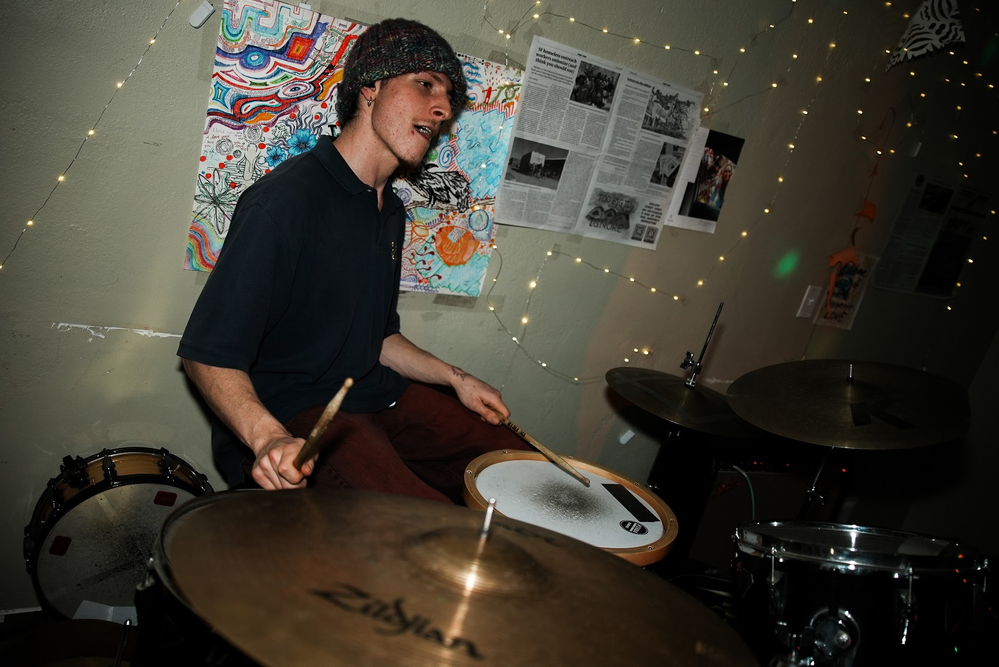
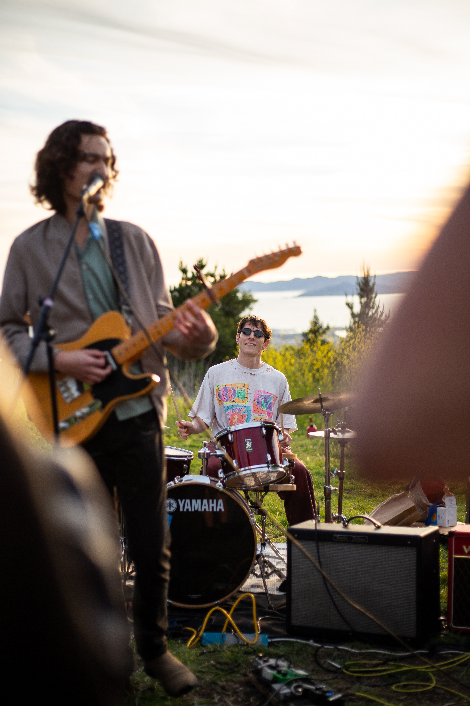
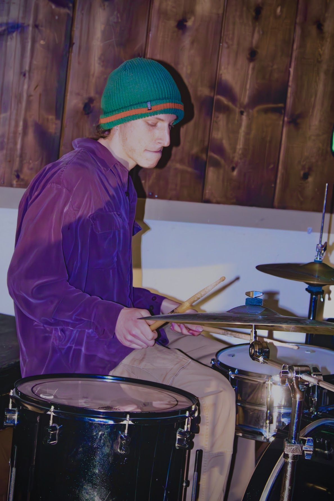

Welcome to Jacob Landman's Webpage!
About me
Hi! I'm Jacob. I'm currently a full time student at UC Berkeley studying mathematics,
astrophysics, computer science, and music. I love beautiful mornings, fast-paced
days, and sparkly silent evenings. I take inspiration from plants, space, water,
and people who radiate kindness. I enjoy solving problems, collaborating on
design decisions, and working hard to create cool things.
Mathematics
As a math student, I've learned first and foremost to be patient when problem solving.
When I was taking my first analysis classes, I found a new depth of problem solving
learning to sculpt convincing and formal arguments, unlocking new levels of
assuredness and applicability. I believe the mathematical thinking process is a very
useful tool for coming to decisions in the right contexts.
Computer Science
I've been coding since I was about 10 years old, starting with python and eventually
moving toward Java, Javascript, and C++, among others.
I find software development really fun, solving each little problem to build up to
an awesome final product, and appreciate the massive power of computation these days.
I have built a few apps on my own, largely for recreation, and have experience coding
with and without AI.
Music
I grew up in a musical family, and began playing guitar, drums, and piano over 15 years
ago. I'm currently the UC Jazz big band drummer, and have been in many performing
ensembles over the years.
I have solo written, recorded, and released multiple EPs
(1 of which can be found at my
bandcamp).
Here's some fun pictures from some of my recent gigs!
|
|

|
|

|

|
Thanks for checking out this page! Wishing beauty unto you!
Jacob Landman